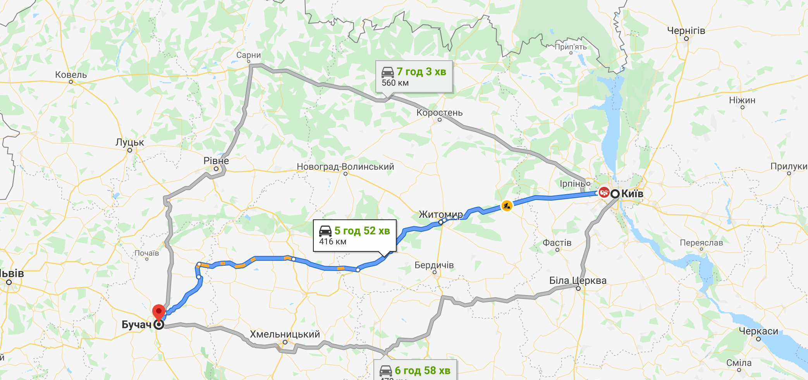

Як доїхати
Власним транспортом можна доїхати трасою: M19 або E50 із Тернополя, Н02, H09 та E40 зі Львова та H1

На жаль пасажирське залізничне сполучення з містом не функціонує. Найближчі маста з яких
Залізнична станція(Івано Франківськ):
площа Привокзальна 9,
Івано-Франківськ, 76000
+38 (0342) 59-34-52 +38 (0342) 59-38-34 +38 (0342) 59-22-23
Івано-Франківськ, 76000
Залізнична станція (Тернопіль):
майдан Привокзальний 1,
Тернопіль, 46001
+38 (0352) 47-22-46+38 (0352) 47-15-05 +38 (0352) 47-24-24
Тернопіль, 46001
Прямим автобусним рейсом в Бучач можна добратись з багатьох міст Тернопільського, Івано франківського, Львівського та Хмельницького напрямків - з Яремче, Бережан та чорткова.
Автобусна станція №1(Івано-Франківськ):
вулиця Залізнична, 30,
Івано-Франківськ, 76000
+38 (0342) 75-08-30
Івано-Франківськ, 76000
Автобусна станція №2(Івано-Франківськ):
вулиця Горбачевського, 14,
Івано-Франківськ, 76000
+38 (0342) 58-36-66
Івано-Франківськ, 76000
Залізнична станція (Тернопіль):
майдан Привокзальний 1,
Тернопіль, 46001
+38 (0352) 47-22-46+38 (0352) 47-15-05 +38 (0352) 47-24-24
Тернопіль, 46001
Автобусна станція (Бучач):
вулиця Галицька,
Бучач, 48400
Бучач, 48400
Найближчий аеропорт знаходиться у місті Івано-Франківськ за 80км. Бучача, а також за 160км. у Львові.
Аеропорт (Львів):
вулиця Любінська, 168,
Львів, Львівська область, 79040
Львів, Львівська область, 79040
Аеропорт (Івано-Франківськ):
вулиця Євгена Коновальця, 264А
Івано-Франківськ, Івано-Франківська область, 76000
Івано-Франківськ, Івано-Франківська область, 76000